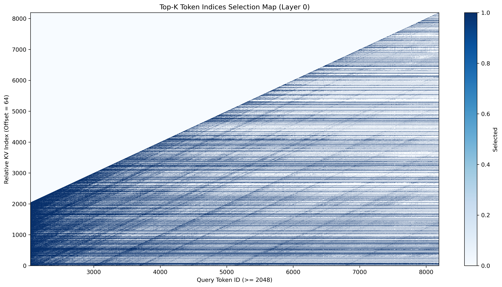
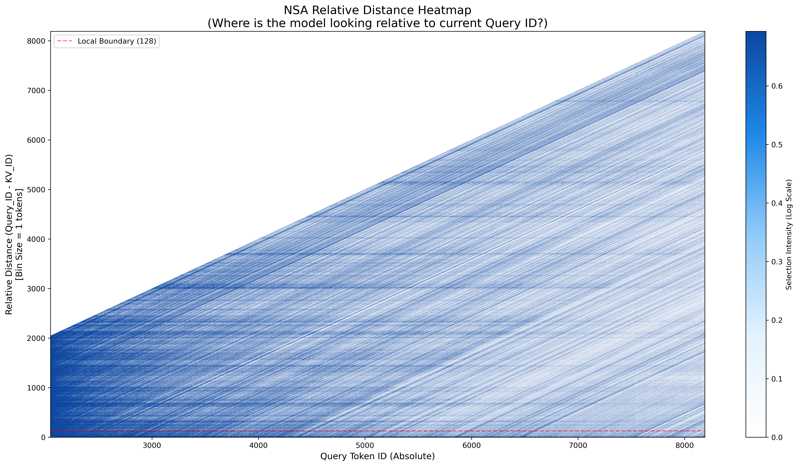
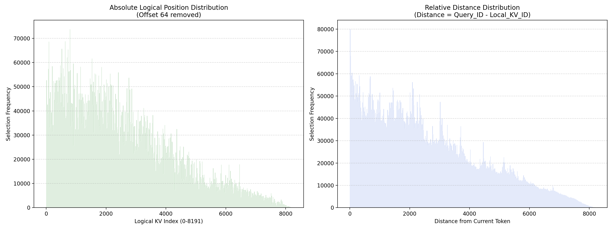
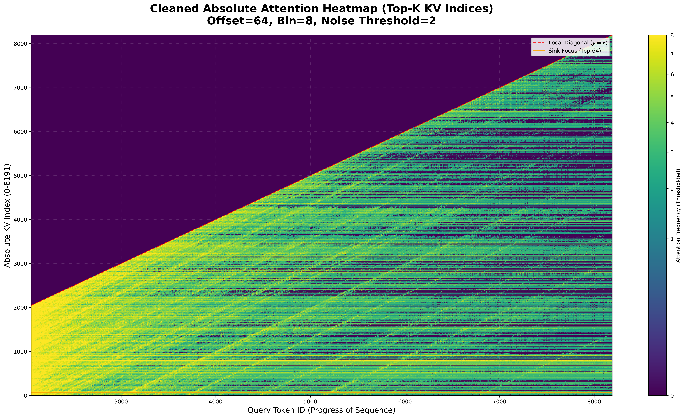
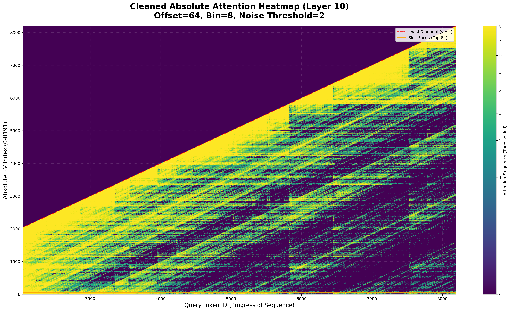
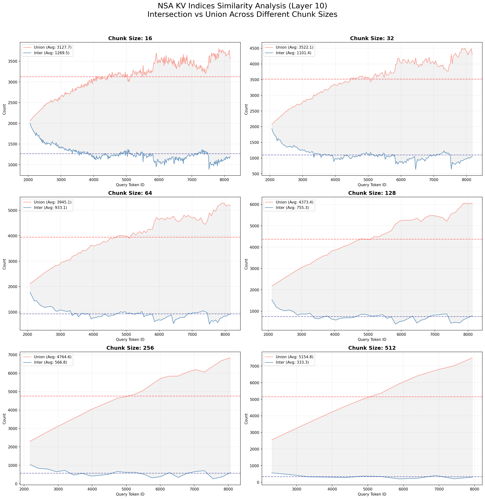
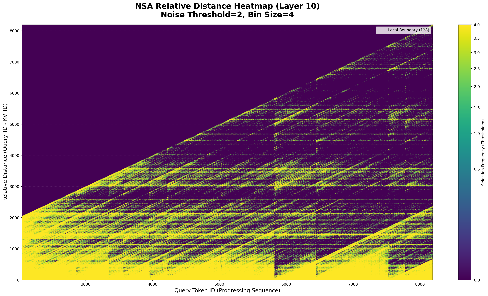
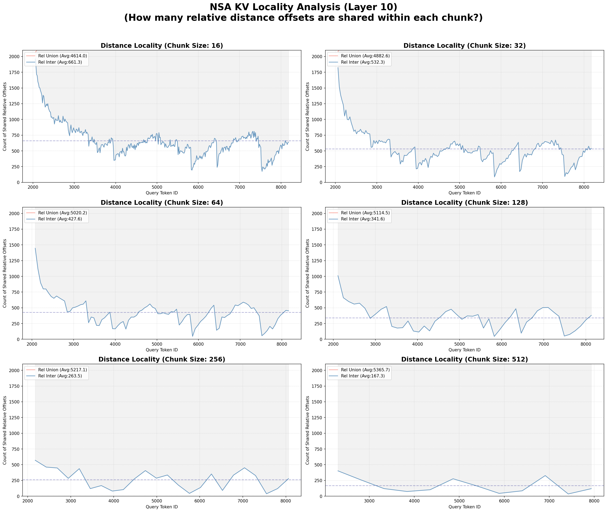

SGLang中DSA的实现以及相关分析
SGLang dsa
profile
goal
本次实验的目标是：
- 绘制heatmap来观察在一个seq里attn的pattern是什么样的
- 统计一下不同的block-size内部选取kv indice的交集和并集的情况
layer0
（layer0的attn pattern其实比较特殊，后面更深入的其他的layer的pattern其实比较相似，所以这里的分析的重要性弱于后面的分析）
从longbench里找了一个长文本做了一次prefill，前 2048 token是直接使用的standard mha，也就是dense的attn
这里画了几张 2048 - 8192 的heatmap（chunk prefill 的上限是8192，see in srt/managers/scheduler.py）

可以看到这里的“横线”和”斜线“是非常明显的，说明其实attn显示出了很强的sink特征和relative特征，lightning indexer选择的kv倾向于选择：
sink attn：选取特定的绝对位置上的kv，维持全局性relative attn：从当前query id向前看，每隔一些长度会选取一些kv
随着窗口的长度增加还有在这样的特征：
- 横线部分基本保持
- 斜线部分渐渐弱化
也就是随着窗口变大，relative attn 会给 sink attn 让位

block内部选取indices的交集和并集
 这张图似乎能印证上面的一些观察，交集似乎就是具备sink特征的，而交集中剔除并集的部分很可能就是relative特征的
这张图似乎能印证上面的一些观察，交集似乎就是具备sink特征的，而交集中剔除并集的部分很可能就是relative特征的
根据上面的比例信息，以及实际选取数量的表格(此处未列出)，交集和并集的数量和block所在的位置没有显著的关系，在远离dense之后都会趋于一个恒定的值
如果说并集就是 sink 的话，那么就是随着seq的增长，前面的sink的宽度减少为了给靠后的token一个出现在attn里的机会，并且这个sink的数量是比较稳定的（在最后7-8k的时候出现了一点下降的趋势，可能在更长的时候会下降？）


other layer
layer0之后的层的pattern都比较相似
从heatmap里可以看出attn主要以local为主，stride为辅


可以看到这里的曲线的形状在直到chunk size 为128的时候都被很好的保持，说明128个相邻token之间选取的kv indices的相似度会比较高，平均数能达到755 ，也就是占到 1/3 左右；
下面的图是对locality进行了一些的分析


可以看到在128为一组里选取的local的相似度也是很高的
trade off
SGLang里的实现是 <2048 直接使用 standard MHA，超过的部分才启用 MHA mode MLA；
Reference
https://github.com/sgl-project/sglang/issues/11060
https://github.com/sgl-project/sglang/blob/main/docs/basic_usage/deepseek_v32.md